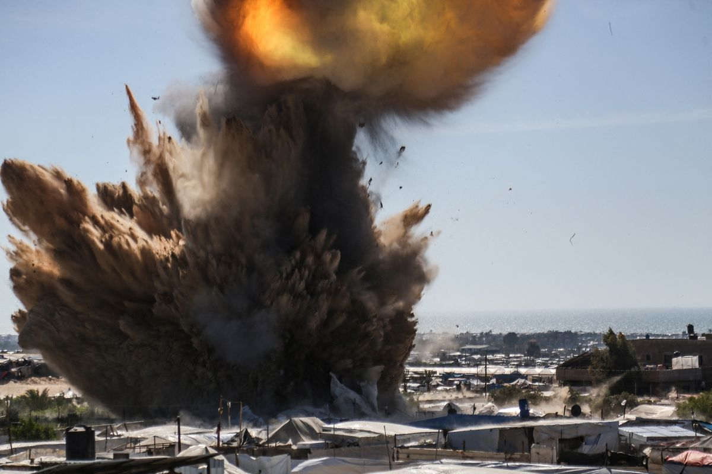

Israel akan serang Gaza Besar-besaran, Panggil puluhan ribu Prajurit Cadangan
Ketegangan di Jalur Gaza semakin meningkat. Pemerintah Israel dikabarkan memanggil puluhan ribu pasukan cadangan sebagai persiapan untuk serangan besar-besaran ke wilayah Gaza. Serangan ini dilaporkan sebagai respons terhadap rentetan serangan roket yang diluncurkan oleh kelompok militan di wilayah tersebut.
Asap tebal dan kobaran api terlihat membubung dari beberapa lokasi di Khan Yunis, wilayah selatan Gaza. Warga sipil terpaksa mengungsi dan situasi kemanusiaan memburuk dengan cepat.
Masyarakat internasional menyerukan gencatan senjata dan dialog diplomatik, sementara berbagai lembaga kemanusiaan bersiap untuk mengirimkan bantuan darurat ke wilayah terdampak.